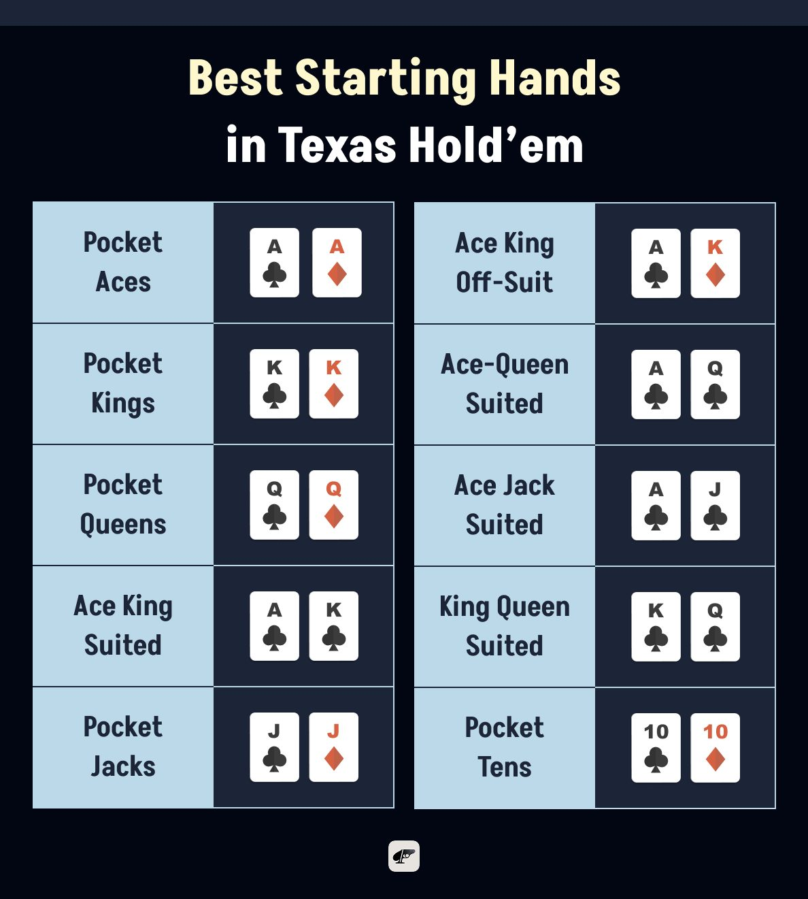
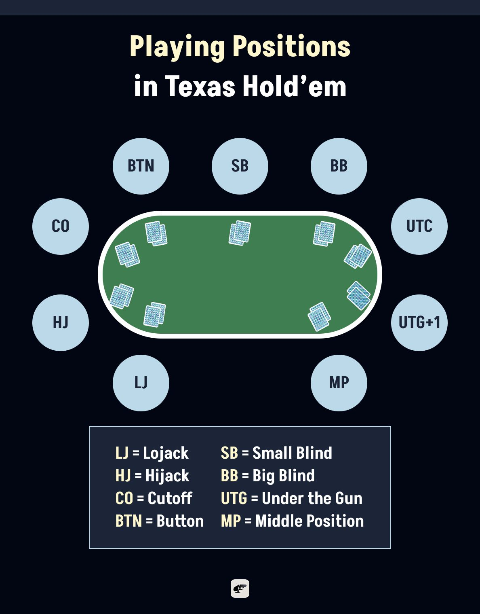
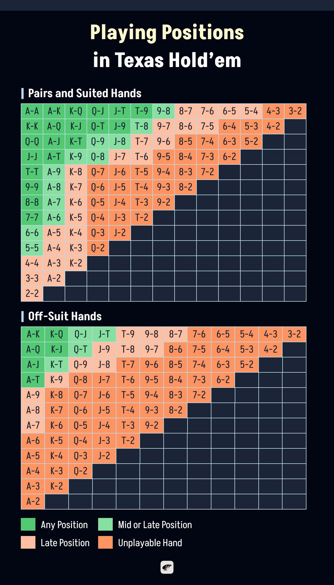

When you're learning how to play Texas Hold'em, one of the most important things to understand is which starting hands are worth playing and which ones you should just toss into the muck. In this article, we’ll walk you through the strongest hands in Texas Hold’em and share simple strategies to help you make the most of your cards and win. Let’ roll!
10 Best Starting Hands in Texas Hold’em
Not all starting hands in poker are created equal. Some give you a big advantage even before the flop hits the table. While the probabilities of being dealt these premium hands are low, they’re absolutely worth the wait. Here are the 10 best starting hands in Texas Hold’em, along with tips on how to play them for maximum value:
Pocket Aces – AA
Pocket Aces are the dream start. This is the kind of hand that makes players sit up straighter. When you pick up AA, you’re in the driver’s seat, and your mission is simple: build a strong position early and take control of the pot before too many players sneak in.
The competitive mindset here is discipline mixed with confidence, meaning don’t try to get cute or overly tricky. Raise. Re-raise. Set the tone. You want to isolate, apply pressure, and make opponents pay to continue.
Of course, Aces aren’t invulnerable; on messy, highly connected flops, your job shifts from “push” to “protect.” If the action turns wild in a multi-way pot, read the room and slow down. The edge comes from knowing when to extract maximum value and when to shield yourself from chaos.
Pocket Kings – KK
Pocket Kings, or the Cowboys, are a powerhouse just behind AA. When you get them, you should feel like you’re stepping onto the field with momentum on your side. Play them with conviction. Raise to narrow the field, build the pot, and make opponents uncomfortable.
But here’s the winning mentality: respect the Ace. If one hits the flop and an opponent suddenly wakes up with aggressive action, it’s your cue to evaluate: are they telling the truth, or is it a move you can challenge? Against looser, more playful opponents, KK still holds firm. Against tight, conservative players, caution is a valuable tool.
Pocket Queens – QQ
Next, we’ve got Pocket Queens to give you strength and swagger, but also demand awareness. You should definitely lean into aggression pre-flop, since QQ dominates most hands, yet the winning mindset here involves clear-eyed adaptability. When the board cooperates, you push confidently.
When an Ace or King joins the party post-flop, and your opponent starts applying pressure, that’s your moment to pause and analyze. QQ rewards players who don’t get emotionally attached. If you stay logical, not stubborn, you’ll consistently squeeze value out of this hand while avoiding the traps that catch less disciplined players.
Ace King Suited – AKs
AKs, aka Big Slick, are the kind of hand that makes competitive players perk up. It’s not a made hand yet, but it carries enormous upside. The key is recognizing that AKs are a momentum builder. Raise to take initiative; re-raise if you want to challenge an aggressive opponent’s position.
When you pair your Ace or King, you’re ahead of most of the table. When you don’t, your flush and straight draws give you plenty of ways to continue applying pressure. Skilled players use AKs to steer the table, not follow it.
Even when you miss, you often have enough equity and table presence to pressure weaker holdings into folding. That’s the winning angle.
Pocket Jacks – JJ
Pocket Jacks are strong, but they test your discipline more than your bravado. Playing JJ is all about precision over pride. Raise pre-flop to thin the field, as JJ thrives against fewer opponents.
But once the flop hits, your posture should shift from aggressive confidence to calculated awareness. If the board is low and clean, keep up the pressure. If overcards like Queens, Kings, or Aces show or the board turns dangerous, don’t get married to the hand.
Strong players know when to slow down and play the long game, while less experienced players donate chips because they “feel committed.” The true edge with JJ comes from good judgment, not blind loyalty.
Ace King Off-Suit – AK
Coming next is the Ace-King Off-Suit. AK has the same high-card authority as AKs but requires a sharper competitive touch. You don’t have the flush potential to bail you out, so your edge comes from initiative and position. AK Off-Suit plays beautifully when you’re the one applying pressure; it plays awkwardly when you’re reacting to others.
Raise in late position, challenge weak opens, and fold gracefully when you completely miss, and someone else represents real strength. AK is powerful, but only if you stay in control of the pot’s pace.
Ace-Queen Suited – AQs
Ace-Queen Suited is polished, flexible, and rewarding when handled with intent. AQs give you strong top-pair potential plus premium flush equity, meaning you can build the pot and pressure opponents effectively. But here’s the competitive angle: mind the hierarchy. AK outranks you, and strong players will pressure AQ-heavy ranges for that reason.
Use AQs to open pots or 3-bet in late position where you dictate rhythm, but if someone fires back hard from early position, consider that they may be ahead. Great players thrive with AQs because they know when to accelerate and when to steer around danger.
Ace Jack Suited – AJs
Then comes Ace-Jack Suited, which is elegant and dangerous in the right hands. You get top-pair potential, straight possibilities, and flush opportunities, but you must handle it with intention. What you need to do here is to leverage your position. AJs shine when you act after your opponents; it dims when you’re guessing from out of position.
Use it to attack late, pressure limpers, and set up multi-street plans. But remain aware that AJs can be dominated by stronger aces. Don’t let the beauty of the hand blind you. AJs are a powerful tool when used wisely, costly when overvalued.
King Queen Suited – KQs
Here we meet King-Queen Suited. This is one of the most entertaining and flexible hands in the game. It lines up straights, flushes, and strong top-pair possibilities. This is the kind of hand that lets you play creatively. From a competitive standpoint, KQs is your mid-tier aggression weapon. It’s fantastic to open or re-raise in late position, especially against opponents who fold too often pre-flop.
But if tight players raise in the early position, it’s your signal to step back and reconsider. The strength of KQs lies in hitting boards that others miss and using its equity to pressure weaker ranges. It’s stylish, potent, and rewarding when played with awareness.
Pocket Tens – TT
Ranked last, we got Pocket Tens. TTs sit right at the edge between premium and “handle with care.” They’re great pre-flop but quickly become uncertain on overcard-heavy boards. The winning mentality with TT is to take charge early, evaluate clearly later. Raise pre-flop to knock out players who might outdraw you.
After the flop, judge the situation with brutal honesty. If a big card lands and your opponent shows major strength, play small-ball or fold. But on dry flops, TT can absolutely take the lead in the hand. Strong players win with TT not by forcing outcomes, but by reading the table and adjusting smoothly.
Texas Hold'em Starting Hands Ranked

Other Good Starting Hands in Texas Hold’em
While the top 10 hands get most of the attention, there are plenty of other starting hands in Texas Hold’em that can be profitable when played correctly, especially in the right situation. Let’s break them down and see why they’re worth keeping in your pre-flop toolbox.
Aces
Everyone knows Pocket Aces (AA) are the ultimate hand pre-flop, but don’t sleep on non-paired Aces like Ace-Ten (AT) or Ace-Nine suited (A9s). These hands can pack a serious punch, especially when they’re suited.
Why? Because they give you a shot at landing top pair with a strong kicker, or even better, making the nut flush. They’re the kind of hands that let you take control, especially from late position, where aggression pays off.
Examples: A♥ 9♥ / A♣ T♣
Play these more confidently from the middle to late position, especially if they’re suited. From an early position, stick to stronger Ace combos like ATs or better.
Other Pocket Pairs
Pocket pairs aren’t all created equal, but even the smaller ones, like Nines through Twos, have sneaky strength. The real magic happens when you hit a set on the flop. Suddenly, your quiet little pair turns into a monster, and your opponents usually won’t see it coming.
If the flop is low and dry, your set can dominate hands with overcards. These hands might look harmless, but they’re often your ticket to big, disguised pots when the stars align.
Examples: 9♠ 9♦ / 6♥ 6♣ / 2♠ 2♣
Play small to medium pairs to hit a set. Call raises if the stacks are deep enough to make it worthwhile. Don’t get married to them if you miss the flop.
Suited Connectors
Hands like 8♠ 9♠ or 5♦ 6♦ may not look flashy pre-flop, but once the community cards are down, they come alive. Suited connectors give you tons of ways to win, like flushes, straights, and even strong top pairs.
They’re also fantastic for bluffing and semi-bluffing because they can hit in so many unexpected ways. And when you do land that hidden straight or flush? Boom! Big pot, and your opponents never saw it coming.
Examples: 7♣ 8♣ / 5♦ 6♦
Best played from late position or in multi-way pots. If the flop gives you a draw, you can apply pressure or call and chase depending on pot odds.
Suited Gappers
Now, let’s talk about the wildcards: suited gappers. Think hands like 6♠ 8♠. They’re like suited connectors with a twist: a gap in the middle. That little skip makes straights a bit trickier to hit, but they still carry plenty of potential. Flushes? Absolutely. Straights? Still possible.
And because they’re not super common, they’re great for catching people off guard. Play them in position, especially with deeper stacks, and you’ve got a sneaky weapon that can deliver big results.
Examples: 6♠ 8♠ / 9♦ J♦
Use these hands as speculative plays, especially in position. Don’t go crazy pre-flop, but if you hit a draw or a big hand, they can pay off handsomely.
Playing Positions in Texas Hold’em
You might wonder if poker is all about the cards, but in reality, your position at the table can be just as important as the starting hand you’re holding. You could have a decent hand, but if you're in the wrong seat, it might not be worth playing. On the flip side, you can turn a medium-strength hand into a winner just by being in the right position. So if you’re serious about improving, understanding table position is a must.

What Is "Position" in Poker?
In Texas Hold’em, position refers to where you sit concerning the dealer button, and more importantly, when you act in each betting round.
- Players closest to the left of the dealer act first, which puts them at a disadvantage.
- Players on or near the dealer button act last, giving them the most information before they make a decision — a huge advantage.
Below we show the full playing positions in a 9-max game. Note that in 6-max games, there are fewer players, so positions like UTG become more aggressive by nature.
| Position Name | Abbreviation | Relative Strength |
|---|---|---|
| Under the Gun | UTG | Early Position |
| Under the Gun +1 | UTG+1 | Early Position |
| Middle Position | MP | Middle Position |
| Lowjack | LJ | Middle Position |
| Hijack | HJ | Late Position |
| Cutoff | CO | Late Position |
| Button | BTN | Late Position |
| Small Blind | SB | Blind |
| Big Blind | BB | Blind |
Let’s break down the best strategies by position so you can start playing smarter and winning more.
Early Position (UTG, UTG+1)
In early positions, you're the first to act, meaning you’re flying blind with zero info on what others might do. That’s why you need to play it safe and stick to premium hands. Think big pairs like AA through TT, and strong high-card combos like AK and AQ.
Occasionally, you can mix in AJs or KQs, but only if the table feels passive. Avoid getting fancy with suited connectors or small pocket pairs since they’re just not worth the risk here. When in doubt, fold. Playing tight from an early position is the name of the game.
Middle Position (MP, Lowjack)
Now things start to open up. In middle positions, you're still lacking full information, but you’re in a much better spot than in the early position. Along with all the hands you’d play earlier, you can now add more value hands like AJs, ATs, KQ, QJs, and even small pocket pairs.
If you’re confident in your post-flop play, suited connectors can also be worth a look. It’s a great time to start thinking about pot control, calculated aggression, and reading your opponents a bit more actively.
Late Position (Hijack, Cutoff, Button)
Here’s where the real fun begins. Playing from late positions gives you a major edge because you get to see how everyone else acts before making your move. You can play a much wider range of hands, everything from the early and middle positions, plus suited connectors like 76s, one-gappers like 97s, weaker suited Aces like A5s, and even off-suit broadways like KJ or QJ.
This is the perfect time to apply pressure, raise lighter to steal blinds, and bluff or semi-bluff with confidence. Position gives you power, so don’t waste it. Be creative and take advantage of the info in front of you.
If you're not sure which hands to play from each position, don't worry, that's exactly what the chart below is for. It's designed to help you make better pre-flop decisions by showing you which hands are worth playing based on where you're sitting at the table.
Just find your hand on the grid (like A♠ J♠ or 7♣ 8♣), then check the color.
- Dark green = Play from any position
- Light green = Play from the middle or late position
- Orange = Late position only
- Red = Unplayable in most cases
Use this as a quick reference while you’re learning. It’ll keep you from jumping into bad spots and help you build good habits early on.

FAQs
What hands should you go all-in preflop with?
Going all-in preflop is usually best with premium hands like Pocket Aces (AA), Pocket Kings (KK), Pocket Queens (QQ), and sometimes Ace-King suited (AKs). Stack size, position, and opponent tendencies matter. In tournaments, short stacks may shove wider ranges, while deep stacks should avoid unnecessary all-ins.
What is the strongest hand in poker?
The strongest starting hand in poker is Pocket Aces (AA). Before the flop, it dominates every other hand statistically. Aces give you the highest chance of winning and should almost always be played aggressively. While they can still lose after the flop, no other hand starts with a better advantage.
What are the good starting hands in Texas?
Good starting hands include AA, KK, QQ, JJ, TT, AK (suited and off-suit), AQ suited, AJ suited, and KQ suited. These hands have strong preflop equity and good post-flop potential. Their value increases when played in a later position and against fewer opponents.
What hands should I play in poker preflop?
Preflop hand selection depends on position. In early position, play tight with premium pairs and strong aces. In the middle position, add suited broadways and small pairs. In a late position, you can widen your range to include suited connectors, suited aces, and speculative hands due to positional advantage.
What poker hands should I fold?
Hands that lack strong potential should usually be folded, especially in the early position. These include low off-suit cards, weak unsuited aces, and disconnected hands. Even decent hands should be folded if you face heavy aggression or miss the flop badly. Folding is a key skill for long-term profitability.
How important is position in Texas Hold ‘Em?
Position is extremely important in Texas Hold’em. Acting later lets you see what others do before deciding, giving you more information and control. Late position allows you to play more hands, bluff more effectively, and extract more value. Poor position forces tighter play and increases the risk of mistakes.
Sharpen Your Game with Pokerrrr 2—The Top Game App for Texas Hold’em
Knowing your starting hand strength is important, but knowing when to play them based on your position is what really makes a winning player. Don’t just memorize the best hands. Learn how to adjust your strategy depending on where you sit, and you’ll find yourself making more confident, profitable decisions every time you play. Ready to level up your poker skills?
With Pokerrrr 2, learning and playing are easier than ever. Whether you're diving into Short Deck Poker, mastering Texas Hold’em, or figuring out how to play without chips, this app brings the full casino experience to your fingertips. Host easy poker games, invite your friends, track your plays, and even start your own Poker Club, all in a smooth, real-time environment. Download Pokerrrr 2 now and turn your next hand into a winning moment.